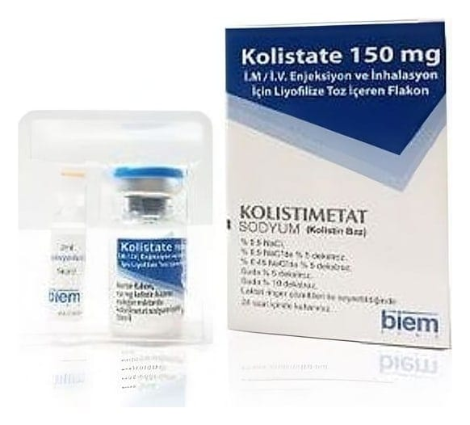

Kolistate 150 mg IM/IV Enjeksiyon Ve İnhalasyon İçin Liyofilize Toz İçeren Flakon, 1 Adet Flakon+ 1 Adet Çözücü

Ne için kullanılır
KT · Bölüm 1KOLİSTATE’nin etkin maddesi kolistimetat sodyum’dur. Kolistimetat sodyum bir antibiyotiktir. Polimiksin olarak adlandırılan antibiyotik grubuna aittir.
KOLİSTATE, insan vücudunda bazı tip bakterilerin sebep olduğu enfeksiyonları yok etmek için kullanılır. Tüm antibiyotikler gibi KOLİSTATE da sadece bazı tip bakterileri yok edebilir. Bu yüzden sadece bazı tip enfeksiyonların tedavisi için uygundur.
KOLİSTATE, 10 ml’lik berrak cam flakon ve 2 ml enjeksiyonluk su içeren ampul ihtiva eden karton kutuda ambalajlanıp sunulmaktadır.
KOLİSTATE, vücudun farklı bölgelerindeki bakteriyel enfeksiyonların tedavisinde kullanılır.
KOLİSTATE, belirli bakteri tiplerinden kaynaklanan ciddi enfeksiyonları tedavi etmek için damardan çözelti olarak verilir. Bu enfeksiyonlar bazı pneumonias, böbrek ve mesanenin bazı enfeksiyonlarını içerir. KOLİSTATE genellikle bu tip enfeksiyonları tedavi etmek için kullanılmaz. Fakat diğer antibiyotikler bir sebepten dolayı uygun olmadığında, KOLİSTATE kullanılabilir.
Ayrıca KOLİSTATE, kistik fibrozisli hastalarda -çocuk hastalar da dahil- Pseudomonas aeruginosa’nın sebep olduğu akciğer enfeksiyonlarının tedavisinde inhalasyon yoluyla kullanılır ve aşağıdaki koşullarda endikedir:
Hastanın belirtisi olsun olmasın solunum yolu izolatlarında ilk defa Pseudomonas aeruginosa üremesi olması durumunda sistemik antibiyotik tedavisi ile birlikte uzun süreli inhale olarak. Pseudomonas aeruginosa kolonizasyonu olan 6 yaşın altındaki hastalarda belirtiler geliştiği takdirde uzun süreli inhale olarak Üreyen Pseudomonas aeruginosa suşunun tobramisine dirençli olduğu durumlarda uzun süreli inhale olarak.